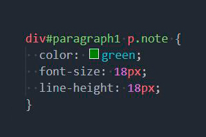

CSS.
Введение и обзор
веб-технологии
css
(от англ. Cascading Style Sheets) — каскадные таблицы стилей
CSS язык иерархических правил (таблиц стилей (en-US)), используемый для представления внешнего вида документа, написанного на HTML или XML (en-US) (включая различные языки XML, такие как SVG (en-US) и XHTML).
Использование CSS
CSS используется создателями веб-страниц для задания цветов, шрифтов, стилей, расположения отдельных блоков и других аспектов представления внешнего вида этих веб-страниц. Основной целью разработки CSS являлось отделение описания логической структуры веб-страницы (которое производится с помощью HTML или других языков разметки) от описания внешнего вида этой веб-страницы (которое теперь производится с помощью формального языка CSS). Такое разделение может увеличить доступность документа, предоставить большую гибкость и возможность управления его представлением, а также уменьшить сложность и повторяемость в структурном содержимом.
Кроме того, CSS позволяет представлять один и тот же документ в различных стилях или методах вывода, таких как экранное представление, печатное представление, чтение голосом (специальным голосовым браузером или программой чтения с экрана) или при выводе устройствами, использующими шрифт Брайля.
Способы подключения CSS к документу
-
Когда описание стилей находится в отдельном файле, оно может быть подключено к документу посредством элемента <link>, включённого в элемент <head>
-
Когда файл стилей размещается отдельно от родительского документа, он может быть подключён к документу инструкцией @import в элементе <style>
-
Когда стили описаны внутри документа, они могут быть включены в элемент <style>, который, включается в элемент <head>

-
Когда стили описаны в теле документа, они могут располагаться в атрибутах отдельного элемента

Правила построения CSS
В первых трёх случаях подключения стилей CSS к документу (см. выше) каждое правило CSS из файла имеет две основные части — селектор и блок объявлений. Селектор, расположенный в левой части правила до знака «{», определяет, на какие части документа (возможно, специально обозначенные) распространяется правило. Блок объявлений располагается в правой части правила. Он помещается в фигурные скобки, и, в свою очередь, состоит из одного или более объявлений, разделённых знаком «;». Каждое объявление представляет собой сочетание свойства CSS и значения, разделённых знаком «:». Селекторы могут группироваться в одной строке через запятую. В таком случае свойство применяется к каждому из них.
В четвёртом случае подключения CSS к документу (см. список) правило CSS, являющееся значением атрибута style элемента, к которому он применяется, представляет собой перечень объявлений («свойство CSS : значение»), разделённых знаком «;».
Cелекторы
виды селекторов
-
Универсальный селектор
-
Селектор тегов
-
Селектор классов
-
Селектор идентификаторов
-
Селектор атрибутов
-

Селектор потомков (контекстный селектор)
-
Селектор дочерних элементов
-
Селектор элементов одного уровня
-
Селектор псевдоклассов
-
Селектор псевдоэлементов
Классы и идентификаторы элементов
Класс или идентификатор может быть присвоен какому-нибудь элементу HTML посредством атрибутов class или id этого элемента:
Основное различие между классами элементов и идентификаторами элементов в том, что идентификатор предназначен для одного элемента, тогда как класс обычно присваивают сразу нескольким. Тем не менее, современные браузеры, как правило, корректно отображают множественные элементы с одинаковым идентификатором. Также различие в том, что могут существовать множественные классы (когда класс элемента состоит из нескольких слов, разделённых пробелами). Для идентификаторов такое невозможно.